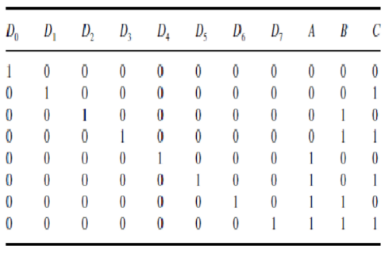
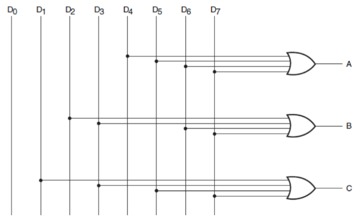

Encoders are basically just decoders, but backwards.
First things first, ensure that you're familiar with decoders before attacking this chapter. We're assuming that you're familiar with the idea that binary decoders take in n wires and produce an output on one of 2n wires.
Think of encoders as a complement to decoders. Suppose we had 8 input wires, each signifying the decimal numbers from 0 to 8.
Our goal here would be to figure out which wire was on, and then signal the right binary bits to the output.
You'll find that this is done in a highly similar fashion to our decoder. First things first- let's come up with a truth table.
As you can imagine, if we have the truth table for a decoder, we can just as easily come up with a truth table for an encoder. We will be using 3 bits for this example, as we did previously.
 In the above diagram, the columns labelled 'D' represent decimal inputs, while the columns labelled 'A', 'B', and 'C' represent the binary output wires.Given this information, we can produce a logical circuit. You'll find a few key similarities between this circuit and the decoder circuit, cementing the idea that they certainly go hand in hand.
In a loose sense, you may even want to consider them 'complements' of one another, as one undoes the operation of another, and vice versa.
Here is the logical circuit, using the same labels as given in the truth table above.
Basically everything listed in the previous section about decoders is true here, but backwards.
With binary encoders, you're simply taking 2n input wires, and condensing them down into n wires of output.
It also goes without saying that encoders can be used with any number systems, not just the ones we've mentioned here. Again, that would be outside of the scope of this class, so we'll skip that information here. As always, the internet is at your disposal, so feel free to comb it for further information if you wish!